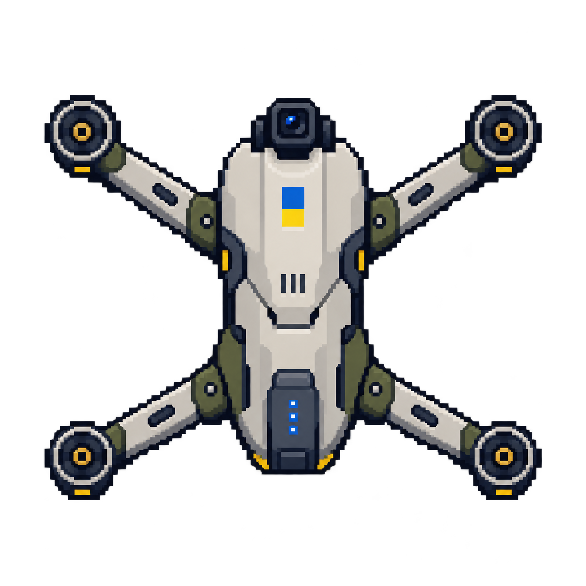
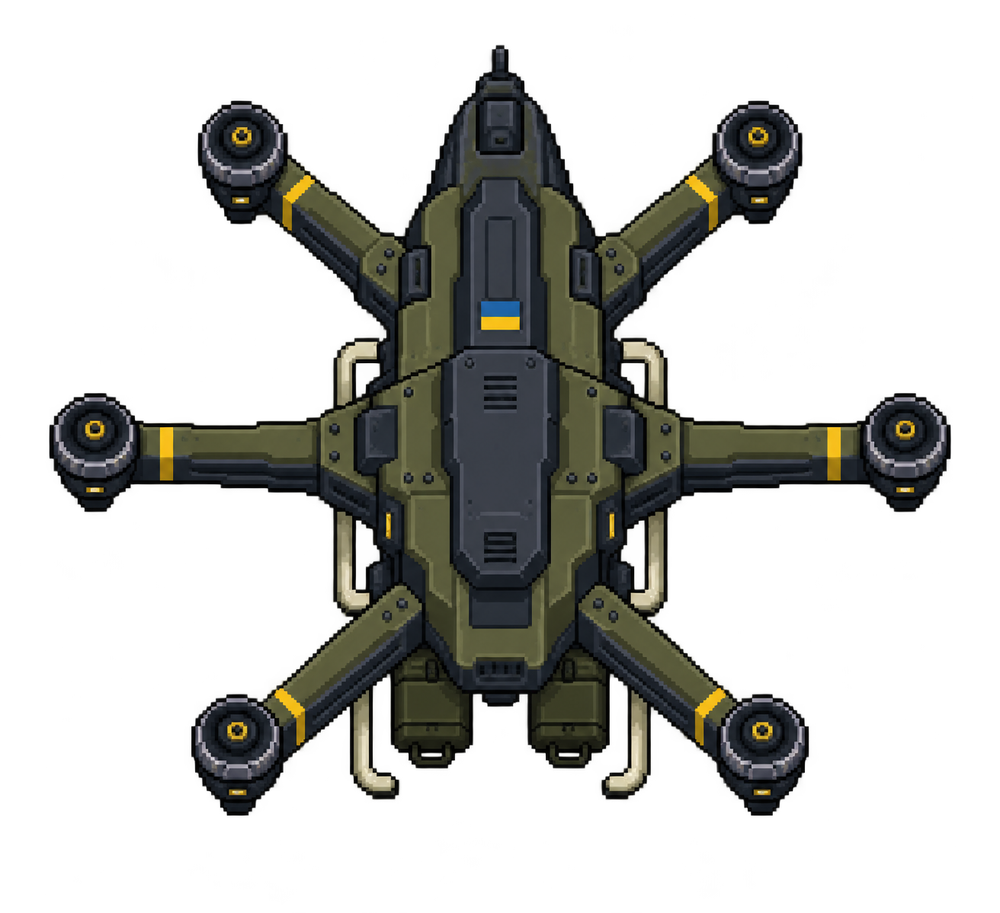
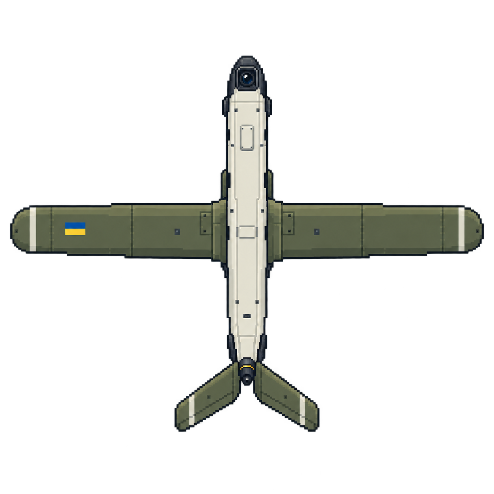
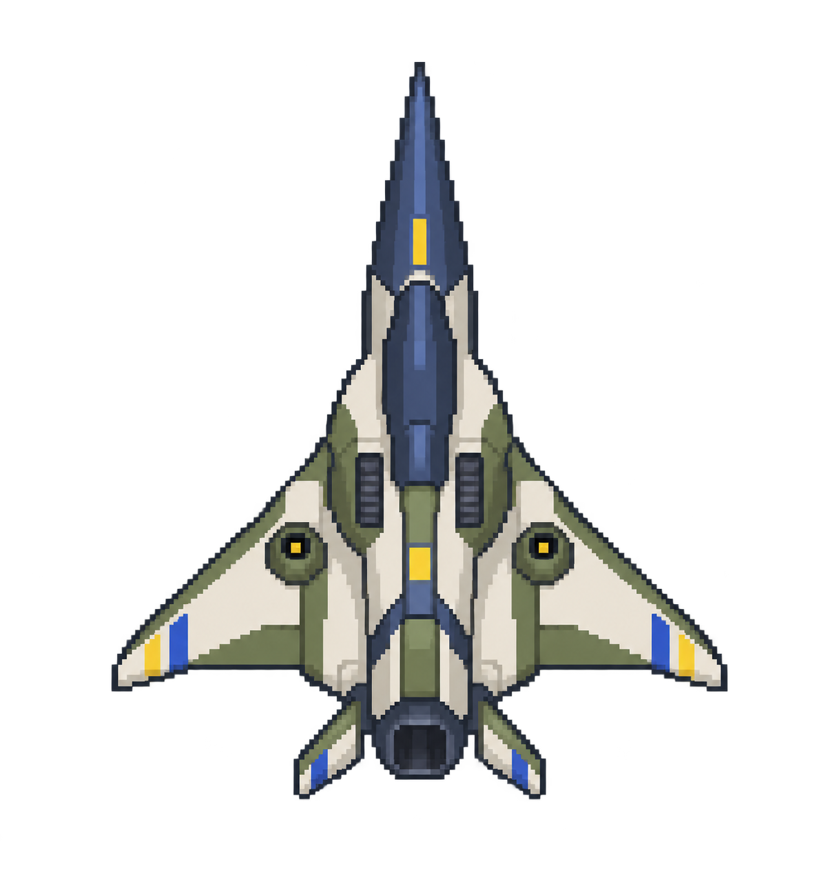
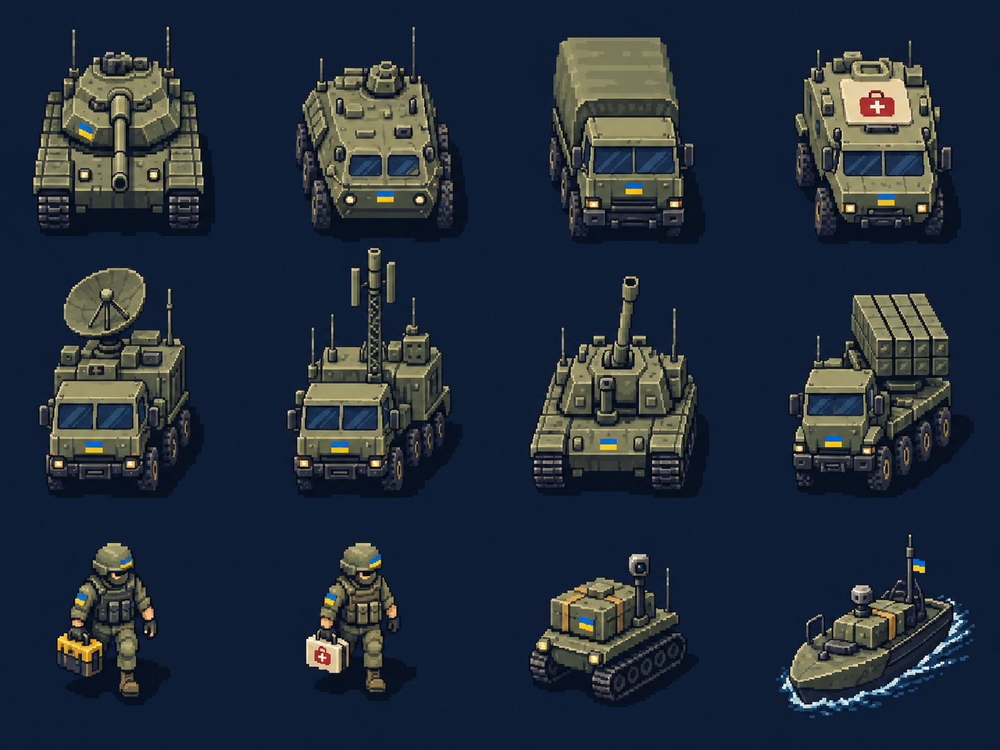

01 / CAMERA QUAD

Scout
Camera cue · four rotors · scan role
Explore real-world reference families and the arcade roles they could inspire. Airframe, equipment, class and appearance remain independent.
Original concepts · static here · animated attachments in the lab

Camera cue · four rotors · scan role

Six-hub example · cargo capacity · delivery role

Broad wings · narrow body · distinct silhouette

Dart profile · airborne toy-target role
Original Ukrainian-themed art study. Three-quarter view, static reference sheet; these are not individually exported or implemented actors.

Models, families and support roles
Loading sourced references…